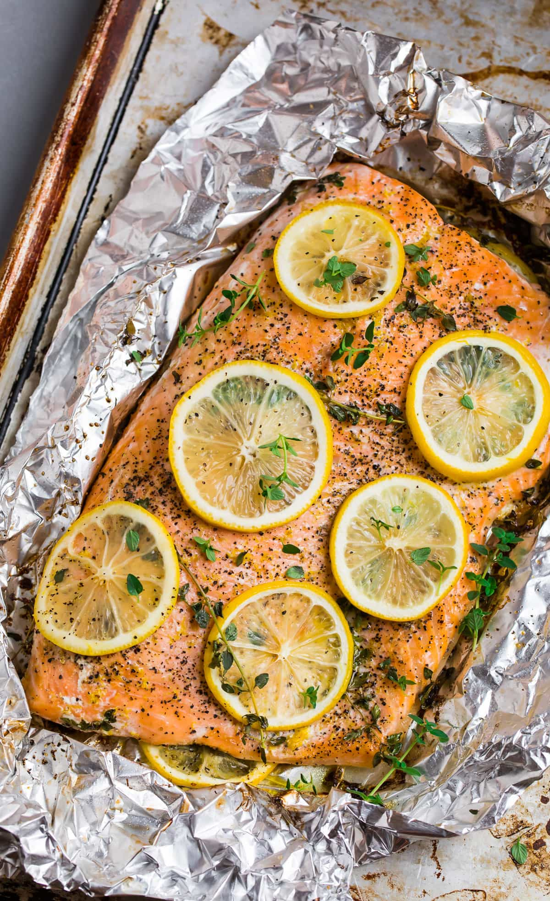

Baked Lemon Pepper Salmon
Home

Recipe Description
Delicious Baked Lemon Pepper Salmon is an easy meal to prepare and goes great with a vegtable or grain side. All you need is a salmon filet, butter or oil, lemon pepper seasoning, and if you're like me, a drizzle of balsamic vinegar glaze.
Ingredients
- salmon filet
- lemon
- black pepper
- herbs
- olive oil
Instructions
- Put salmon on a foil sheet and drizzle olive oil.
- Then season and top with lemon slices and herbs.
- Fold the foil around the salmon and preheat the oven to 375 degrees.
- Bake salmon for 18-20 minutes.